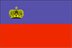

{kind=link}

|
Liechtenstein |  |
| Introduction Geography People Government Economy Communications Transportation Military Transnational Issues | ||
|
|
||
| Liechtenstein | Introduction | Top of Page |
| Background: | The Principality of Liechtenstein was established within the Holy Roman Empire in 1719; it became a sovereign state in 1806. Until the end of World War I, it was closely tied to Austria, but the economic devastation caused by that conflict forced Liechtenstein to conclude a customs and monetary union with Switzerland. Since World War II (in which Liechtenstein remained neutral) the country's low taxes have spurred outstanding economic growth. However, shortcomings in banking regulatory oversight have resulted in concerns about the use of the financial institutions for money laundering. |
| Liechtenstein | Geography | Top of Page |
| Location: | Central Europe, between Austria and Switzerland |
| Geographic coordinates: | 47 10 N, 9 32 E |
| Map references: | Europe |
| Area: |
total:
160 sq km
land: 160 sq km water: 0 sq km |
| Area - comparative: | about 0.9 times the size of Washington, DC |
| Land boundaries: |
total:
76 km
border countries: Austria 35 km, Switzerland 41 km |
| Coastline: | 0 km (landlocked) |
| Maritime claims: | none (landlocked) |
| Climate: | continental; cold, cloudy winters with frequent snow or rain; cool to moderately warm, cloudy, humid summers |
| Terrain: | mostly mountainous (Alps) with Rhine Valley in western third |
| Elevation extremes: |
lowest point:
Ruggeller Riet 430 m
highest point: Grauspitz 2,599 m |
| Natural resources: | hydroelectric potential, arable land |
| Land use: |
arable land:
24%
permanent crops: 0% permanent pastures: 16% forests and woodland: 35% other: 25% (1993 est.) |
| Irrigated land: | NA sq km |
| Natural hazards: | NA |
| Environment - current issues: | NA |
| Environment - international agreements: |
party to:
Air Pollution, Air Pollution-Nitrogen Oxides, Air Pollution-Sulphur 85, Air Pollution-Sulphur 94, Air Pollution-Volatile Organic Compounds, Biodiversity, Climate Change, Desertification, Endangered Species, Hazardous Wastes, Ozone Layer Protection, Wetlands
signed, but not ratified: Air Pollution-Persistent Organic Pollutants, Climate Change-Kyoto Protocol, Law of the Sea |
| Geography - note: | along with Uzbekistan, one of only two doubly landlocked countries in the world; variety of microclimatic variations based on elevation |
| Liechtenstein | People | Top of Page |
| Population: | 32,528 (July 2001 est.) |
| Age structure: |
0-14 years:
18.41% (male 2,992; female 2,996)
15-64 years: 70.6% (male 11,455; female 11,511) 65 years and over: 10.99% (male 1,439; female 2,135) (2001 est.) |
| Population growth rate: | 0.98% (2001 est.) |
| Birth rate: | 11.53 births/1,000 population (2001 est.) |
| Death rate: | 6.7 deaths/1,000 population (2001 est.) |
| Net migration rate: | 4.98 migrant(s)/1,000 population (2001 est.) |
| Sex ratio: |
at birth:
1.01 male(s)/female
under 15 years: 1 male(s)/female 15-64 years: 1 male(s)/female 65 years and over: 0.67 male(s)/female total population: 0.95 male(s)/female (2001 est.) |
| Infant mortality rate: | 4.99 deaths/1,000 live births (2001 est.) |
| Life expectancy at birth: |
total population:
78.95 years
male: 75.32 years female: 82.6 years (2001 est.) |
| Total fertility rate: | 1.5 children born/woman (2001 est.) |
| HIV/AIDS - adult prevalence rate: | NA% |
| HIV/AIDS - people living with HIV/AIDS: | NA |
| HIV/AIDS - deaths: | NA |
| Nationality: |
noun:
Liechtensteiner(s)
adjective: Liechtenstein |
| Ethnic groups: | Alemannic 87.5%, Italian, Turkish, and other 12.5% |
| Religions: | Roman Catholic 80%, Protestant 7.4%, unknown 7.7%, other 4.9% (1996) |
| Languages: | German (official), Alemannic dialect |
| Literacy: |
definition:
age 10 and over can read and write
total population: 100% male: 100% female: 100% (1981 est.) |
| Liechtenstein | Government | Top of Page |
| Country name: |
conventional long form:
Principality of Liechtenstein
conventional short form: Liechtenstein local long form: Fuerstentum Liechtenstein local short form: Liechtenstein |
| Government type: | hereditary constitutional monarchy |
| Capital: | Vaduz |
| Administrative divisions: | 11 communes (gemeinden, singular - gemeinde); Balzers, Eschen, Gamprin, Mauren, Planken, Ruggell, Schaan, Schellenberg, Triesen, Triesenberg, Vaduz |
| Independence: | 23 January 1719 Imperial Principality of Liechtenstein established; 12 July 1806 established independence from the Holy Roman Empire |
| National holiday: | Assumption Day, 15 August |
| Constitution: | 5 October 1921 |
| Legal system: | local civil and penal codes; accepts compulsory ICJ jurisdiction, with reservations |
| Suffrage: | 20 years of age; universal |
| Executive branch: |
chief of state:
Prince HANS ADAM II (since 13 November 1989, assumed executive powers 26 August 1984); Heir Apparent Prince ALOIS, son of the monarch (born 11 June 1968)
head of government: Head of Government Mario FRICK (since 15 December 1993) and Deputy Head of Government Michael RITTER (since 2 February 1997) cabinet: Cabinet elected by the Diet; confirmed by the monarch elections: none; the monarch is hereditary; following legislative elections, the leader of the majority party in the Diet is usually appointed the head of government by the monarch and the leader of the largest minority party in the Diet is usually appointed the deputy head of government by the monarch |
| Legislative branch: |
unicameral Diet or Landtag (25 seats; members are elected by direct popular vote under proportional representation to serve four-year terms)
elections: last held on 9-11 February 2001 (next to be held by NA 2005) election results: percent of vote by party - FBP 49.90%, VU 41.35%, FL 8.71%; seats by party - FBP 13, VU 11, FL 1 |
| Judicial branch: | Supreme Court or Oberster Gerichtshof; Superior Court or Obergericht |
| Political parties and leaders: | Fatherland Union or VU [Dr. Oswald KRANZ]; Progressive Citizens' Party or FBP [Dr. Ernst WALCH]; The Free List or FL [Dr. Pepo FRICK, Karin JENNY, Rene HASLER] |
| Political pressure groups and leaders: | NA |
| International organization participation: | CE, EBRD, ECE, EFTA, IAEA, ICRM, IFRCS, Intelsat, Interpol, IOC, ITU, OPCW, OSCE, UN, UNCTAD, UNIDO, UPU, WCL, WHO (observer), WIPO, WTrO |
| Diplomatic representation in the US: | Liechtenstein's Ambassador to the US, Claudia FRITSCHE, is dually accredited to the UN in New York |
| Diplomatic representation from the US: | the US does not have an embassy in Liechtenstein, but the US Ambassador to Switzerland is also accredited to Liechtenstein |
| Flag description: | two equal horizontal bands of blue (top) and red with a gold crown on the hoist side of the blue band |
| Liechtenstein | Economy | Top of Page |
| Economy - overview: | Despite its small size and limited natural resources, Liechtenstein has developed into a prosperous, highly industrialized, free-enterprise economy with a vital financial service sector and living standards on a par with the urban areas of its large European neighbors. Low business taxes - the maximum tax rate is 18% - and easy incorporation rules have induced 73,700 holding or so-called letter box companies to establish nominal offices in Liechtenstein, providing 30% of state revenues. The country participates in a customs union with Switzerland and uses the Swiss franc as its national currency. It imports more than 90% of its energy requirements. Liechtenstein has been a member of the European Economic Area (an organization serving as a bridge between European Free Trade Association (EFTA) and EU) since May 1995. The government is working to harmonize its economic policies with those of an integrated Europe. |
| GDP: | purchasing power parity - $730 million (1998 est.) |
| GDP - real growth rate: | NA% |
| GDP - per capita: | purchasing power parity - $23,000 (1998 est.) |
| GDP - composition by sector: |
agriculture:
NA%
industry: NA% services: NA% |
| Population below poverty line: | NA% |
| Household income or consumption by percentage share: |
lowest 10%:
NA%
highest 10%: NA% |
| Inflation rate (consumer prices): | 0.5% (1997 est.) |
| Labor force: | 22,891 of which 13,847 are foreigners; 8,231 commute from Austria and Switzerland to work each day |
| Labor force - by occupation: | industry, trade, and building 45%, services 53%, agriculture, fishing, forestry, and horticulture 2% (1997 est.) |
| Unemployment rate: | 1.8% (February 1999) |
| Budget: |
revenues:
$424.2 million
expenditures: $414.1 million, including capital expenditures of $NA (1998 est.) |
| Industries: | electronics, metal manufacturing, textiles, ceramics, pharmaceuticals, food products, precision instruments, tourism |
| Industrial production growth rate: | NA% |
| Electricity - production by source: |
fossil fuel:
NA%
hydro: NA% nuclear: NA% other: NA% |
| Electricity - consumption: | NA kWh |
| Electricity - exports: | NA kWh |
| Electricity - imports: | NA kWh |
| Agriculture - products: | wheat, barley, corn, potatoes; livestock, dairy products |
| Exports: | $2.47 billion (1996) |
| Exports - commodities: | small specialty machinery, dental products, stamps, hardware, pottery |
| Exports - partners: | EU and EFTA countries 60.57% (Switzerland 15.7%) (1995) |
| Imports: | $917.3 million (1996) |
| Imports - commodities: | machinery, metal goods, textiles, foodstuffs, motor vehicles |
| Imports - partners: | EU countries, Switzerland (1996) |
| Debt - external: | $0 (1996) |
| Economic aid - recipient: | none |
| Currency: | Swiss franc (CHF) |
| Currency code: | CHF |
| Exchange rates: | Swiss francs per US dollar - 1.6303 (January 2001), 1.6888 (2000), 1.5022 (1999), 1.4498 (1998), 1.4513 (1997), 1.2360 (1996) |
| Fiscal year: | calendar year |
| Liechtenstein | Communications | Top of Page |
| Telephones - main lines in use: | 20,000 (1997) |
| Telephones - mobile cellular: | NA |
| Telephone system: |
general assessment:
automatic telephone system
domestic: NA international: linked to Swiss networks by cable and microwave radio relay |
| Radio broadcast stations: | AM 0, FM 4, shortwave 0 (1998) |
| Radios: | 21,000 (1997) |
| Television broadcast stations: | NA (linked to Swiss networks) (1997) |
| Televisions: | 12,000 (1997) |
| Internet country code: | .li |
| Internet Service Providers (ISPs): | 44 (Liechtenstein and Switzerland) (2000) |
| Internet users: | NA |
| Liechtenstein | Transportation | Top of Page |
| Railways: |
total:
18.5 km; note - owned, operated, and included in statistics of Austrian Federal Railways
standard gauge: 18.5 km 1.435-m gauge (electrified) |
| Highways: |
total:
250 km
paved: 250 km unpaved: 0 km |
| Waterways: | none |
| Ports and harbors: | none |
| Airports: | none |
| Liechtenstein | Military | Top of Page |
| Military - note: | defense is the responsibility of Switzerland |
| Liechtenstein | Transnational Issues | Top of Page |
| Disputes - international: | Liechtenstein's royal family claims restitution for 1,600 sq km of land in the Czech Republic confiscated in 1918 |
| Illicit drugs: | multilateral organizations engaged in issuing international guidelines for financial sector oversight have found gaps in Liechtenstein's financial services controls that make it vulnerable to money laundering |